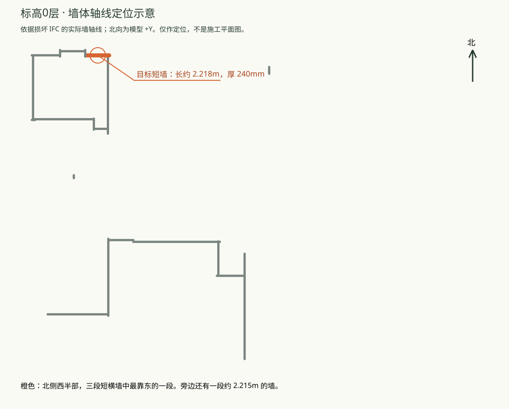

pending_human_review · 未登记。仅供人工检查，不更新总索引、accepted 名单或阶段结论。
真实 DeepSeek 经公共 RepairAPI 完成实例属性修复，发布成功；独立重读核对通过。状态为 pending_human_review，尚未登记为 accepted Proof。
墙一直都在，形状也没有坏。我们人为断开了“这面墙”和“它的资料页”之间的一条连接。修复后，软件可以重新从这面墙直接读到原有信息。因此原始、损坏、修复三个模型的外观相同；这案应看属性前后对照，不能用“有没有补出一面墙”判断成功。
本案是一个偏底层的属性关联测试，原始请求确实比较技术化，不能当作“已证明理解普通工程师语言”的案例。
在楼层列表选择 “标高0”，查看北侧西半部的折线外墙，三段短横墙中最靠东的一段；墙长约 2.218 米、厚 240 毫米。下面的橙色段就是目标，点击原始／损坏／修复视图的定位链接也能直接选中它。

“标高0”是源模型中的楼层名称，其实际标高约 -2.344 米，不能直接替它改叫“一层”。GUID 只作为内部稳定编号留在真实请求和机器证据里，不要求人工抄写。
当前能力边界： 楼层＋约 2.22 米长度会同时命中两段墙，现有代码正确返回多候选。任意“北侧／从西数第二个／距转角若干米”的组合定位还需要补充空间位置合同与澄清流程；本页的人工定位说明不等于该生产能力已实现。
下一份自然语言请求可以采用这样的表达（示意，尚未作为新的 Provider 输入执行）：
请检查“标高0”层北侧西半部的折线外墙，最靠东那段约2.2米长、240毫米厚的墙。它的属性页里外墙标记和参考编号缺失了。请根据输入模型中仍能确认的信息恢复；如果目标或原值不唯一，先让我确认，不要改墙的形状或旁边的构件。
| 角色 | IFC | 可交互视图 |
|---|---|---|
| 原始 dataset 文件 | 01-original.ifc | 原始视图 |
| 删除一条属性关联后，实际输入 | 02-damaged.ifc | 破坏视图 |
| 真实 RepairAPI 发布的完整输出 | 03-repaired.ifc | 修复视图 |
来源为 dataset/external/bimnet/vvo.ifc。original 的 private_ground_truth 角色在执行前冻结，仅供执行后评估；没有向 Provider 提供 pristine 原文件、删除关系的身份或 mutation 配方。
保留的原始技术请求指定上图目标墙的常用属性资料。只删除了一条 IfcRelDefinesByProperties；保留了原属性集和所有几何。公开请求值来自 damaged IFC 中尚存的独立属性集，见 公开输入事实。
| 直接实例属性 | 原始 | damaged | repaired | IFC 类型 |
|---|---|---|---|---|
| 参考编号（Reference） | "240" | 墙的直接资料连接缺失 | "240" | IfcIdentifier |
| 标记为外墙（IsExternal） | 是 | 墙的直接资料连接缺失 | 是 | IfcBoolean |
| 延伸到结构标记（ExtendToStructure） | 否 | 墙的直接资料连接缺失 | 否 | IfcBoolean |
| 承重墙标记（LoadBearing） | 否 | 墙的直接资料连接缺失 | 否 | IfcBoolean |
注意：损坏的是实例直接关联；Type 中已有的继承属性仍可能显示部分值。请查看 DirectProperties，不能只看 EffectiveProperties。定位原始目标／定位损坏目标／定位修复目标。
公共评估的 L1 与 preservation 通过；其 conditional L2 属性项为 not_required，不能拿该标签证明请求值正确。本案请求值由独立重读另行逐项核对。该语义评估适用于冻结三元组，不宣称运行了整个 IFCCompare 基准或系统能力评测。
成功的 live-04 有 2 次真实调用（Intent、ChangeSet），模型 deepseek-v4-flash。此前 attempt-02 也有 2 次真实调用，但执行包装器缺少 Windows multiprocessing 主入口保护，校验子进程失败，未发布成功 IFC；其原始响应、诊断 IFC 和失败结果全部保留。offline-03 是明确标记的 fake Provider 回归，不能算真实调用。startup-01 的非法 run-id 在网络前失败，见 startup-01-correction.json。
人工确认三元组和属性后，仍须执行适用 curator／人读格式检查，才能登记为 accepted Proof；本页已按既有格式收纳到 Proof 目录，但尚未登记。
请修复这个 IFC2X3 文件中墙体 2CsmzAChHF6O6maGXlo6PS 的实例属性关联。该墙的几何、Type、材料、颜色和其他对象均须保留。请按下述明确要求写入实例 Pset_WallCommon：Reference 为字符串 "240"，IsExternal 为布尔 true，ExtendToStructure 为布尔 false，LoadBearing 为布尔 false。上述属性值也可在输入 IFC 尚存的独立 Pset_WallCommon 属性集中核对；不要修改共享 Type，不要增加其他属性，也不要更改任何几何。请输出修复后的完整 IFC。